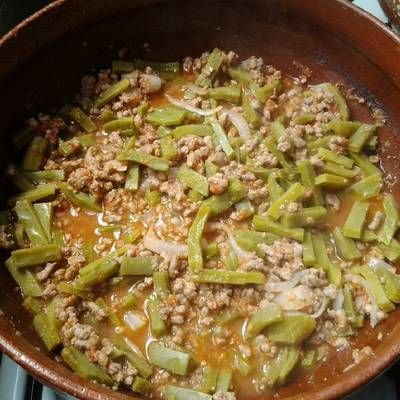

Carne molida

Descripción
Este es un rico guisado muy fácil de preparar, aparte de que rinde mucho por poco precio. Los ingredientes son pocos y el tiempo de preparación es de alrededor de 45 minutos.
Ingredientes
- 1/2 cebolla
- 1 diente de ajo
- 700 gramos de carne molida (de res o de puerco)
- 1 cucharada de aceite de oliva
- Sal y pimienta al gusto
- Orégano al gusto
- Jugo de un limón
Pasos
- Calienta la sartén a fuego medio y añade el aceite.
- Pica la cebolla y el ajo, y añádelos en el aceite. Deja que se frían ligeramente, hasta que la cebolla se ponga transparente.
- Añade la carne junto con la sal y pimienta. Revuélvela de tal forma que la sal y la pimienta se repartan en la carne.
- Deja calentar a fuego medio por unos 20 minutos, o hasta que el jugo de la carne se haya evaporado.
- Mientras se calienta la carne, añade el jugo de limón y el orégano, y revuelve.
- ¡Listo! Con la carne cocida ya puedes servirte este delicioso guiso.